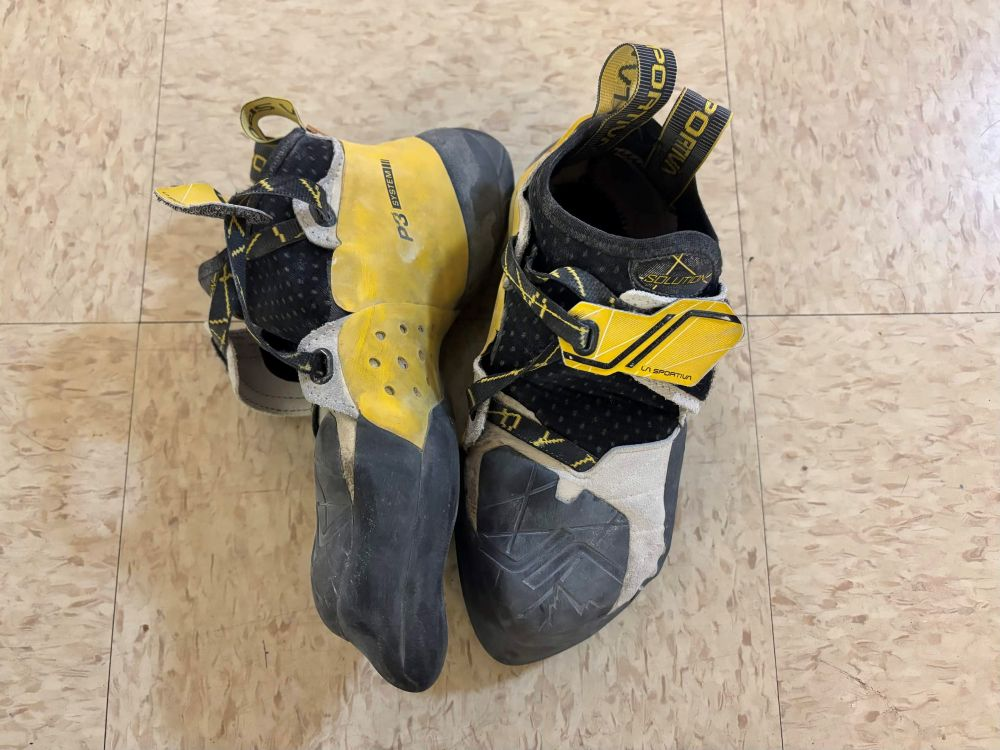

La Sportiva Solutions: Does Performance Sacrifice Comfort?
By Vincent Espana on March 29, 2026

My Two-Year-Old Pair of La Sportivas
For climbers who are starting to get serious about their climbing, the La Sportiva Solution Climbing Shoes stand out as one of the best shoes in modern climbing footwear. The shoe has all of the features needed to be an outstanding climbing shoe: an aggressive downturn, a stiff and supportive heel, and a strong rubber toe patch that makes technical footwork much more reliable. The aggressive shape helps concentrate power in the toe, which makes a noticeable difference on smaller footholds and steeper climbs. This is especially useful for climbers who are transitioning from beginner routes to more challenging bouldering problems, where precision is necessary. The heel is especially impressive, fitting tightly and securely for everyone’s favorite heel hooks! And on the flip side, the rubber toe patch plays an important role for toe hooks, especially on harsh overhangs.
One of the biggest strengths of the Solutions is its durability and lasting performance. I’ve personally had mine for almost two years now, and even after extended use, the shoe has maintained its structure and support. However, the biggest weakness is comfort. While climbing shoes are supposed to feel tight and secure, the Solutions are Achilles crunchers! During longer sessions, there is soreness around the toes and discomfort along the heels, especially during longer sessions. Because of this, they are best suited for intermediate climbers who are willing to sacrifice some comfort for precision, control, and overall performance. Another downside of the shoe is its smearing capabilities. The aggressive toe is great for small footholds, but the rubber proves to be subpar when smearing on the wall or on volumes. Thus, horizontal climbs that are volume-heavy tend to be more difficult when using these shoes. Lastly, another major drawback for most is cost. Such advanced shoe technology does come at a steep price ($219.00 to be exact), which can be a lot for any climber to commit to let alone beginners looking to buy their first pair.
Personally, I love these shoes for what they are advertised for: precision, control, and lasting performance. I’ve had mine for almost two years now, and I can confidently say that there is little to no wear and tear on them. Though they took some time to break in (approximately a month), their performance is definitely worth the ankle pain. I grew confident in trusting my feet on more advanced climbs, which is an extremely important skill as you progress as a climber, and began sending climbs I would not be able to do on rentals or my old beaters. Overall, the La Sportiva Solutions might be the most valuable shoe for a climber willing to sacrifice a bit of comfort (and money) for a shoe that will really perform and last.
Rating:
Pros:
- Stiff Heel
- Strong Toe
- Aggressive Downturn
Cons:
- Pricey
- Takes Long to Break In
- Hurts the Achilles